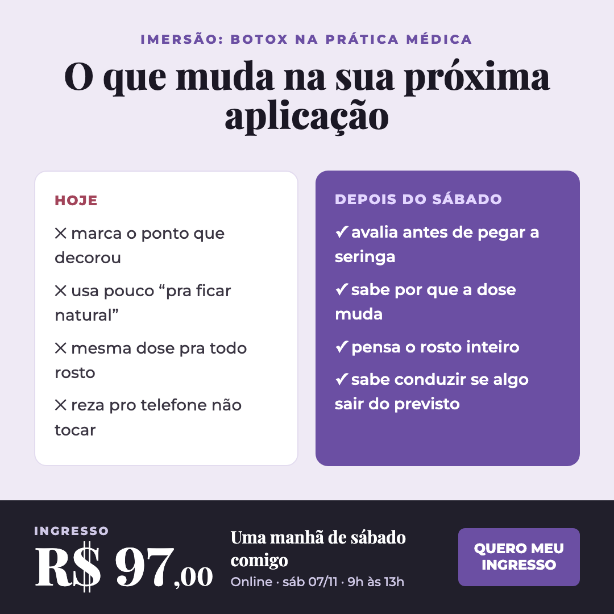
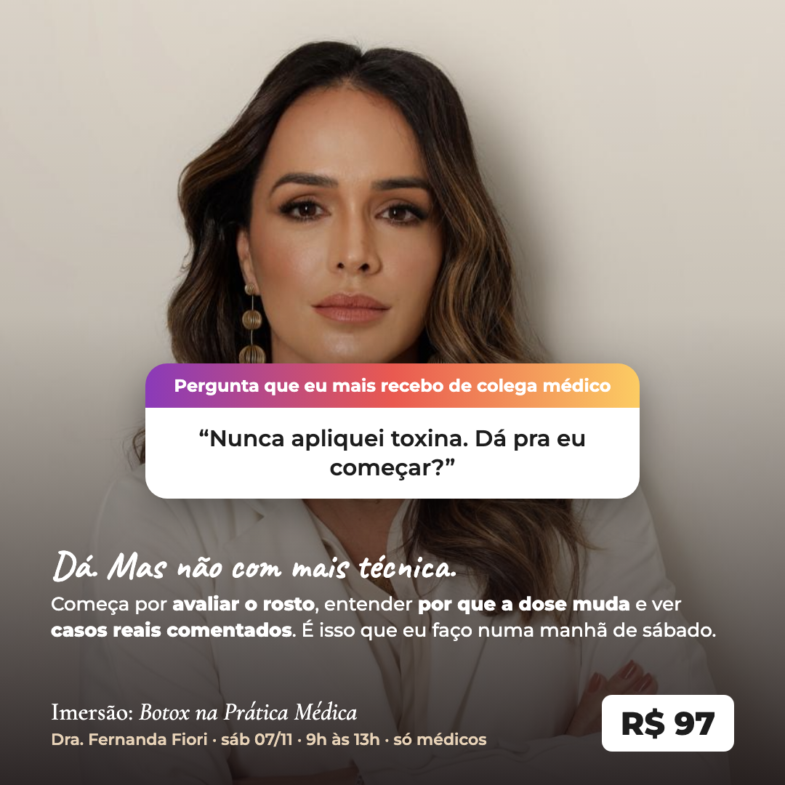
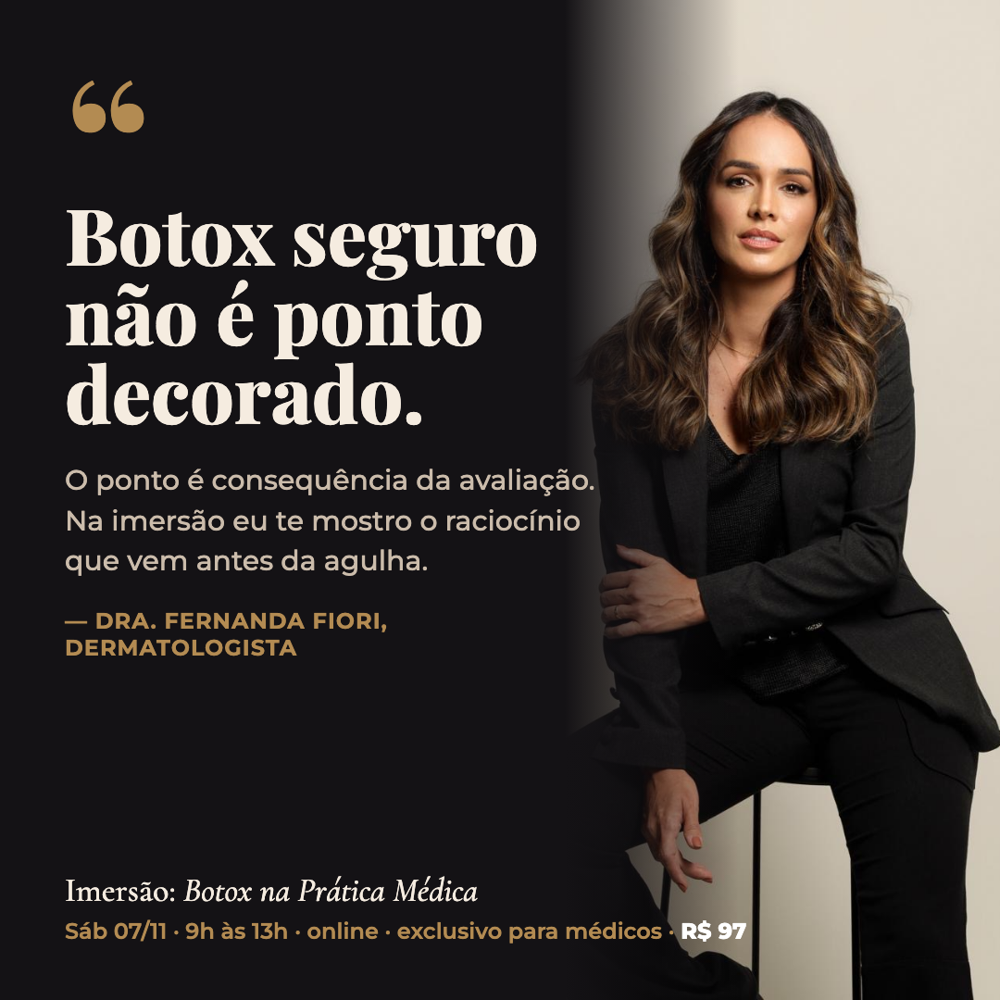
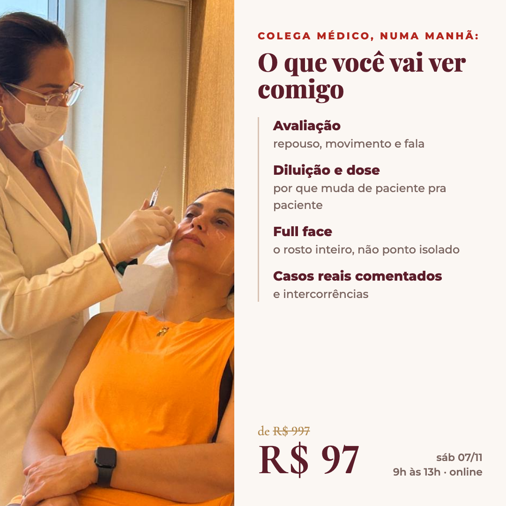
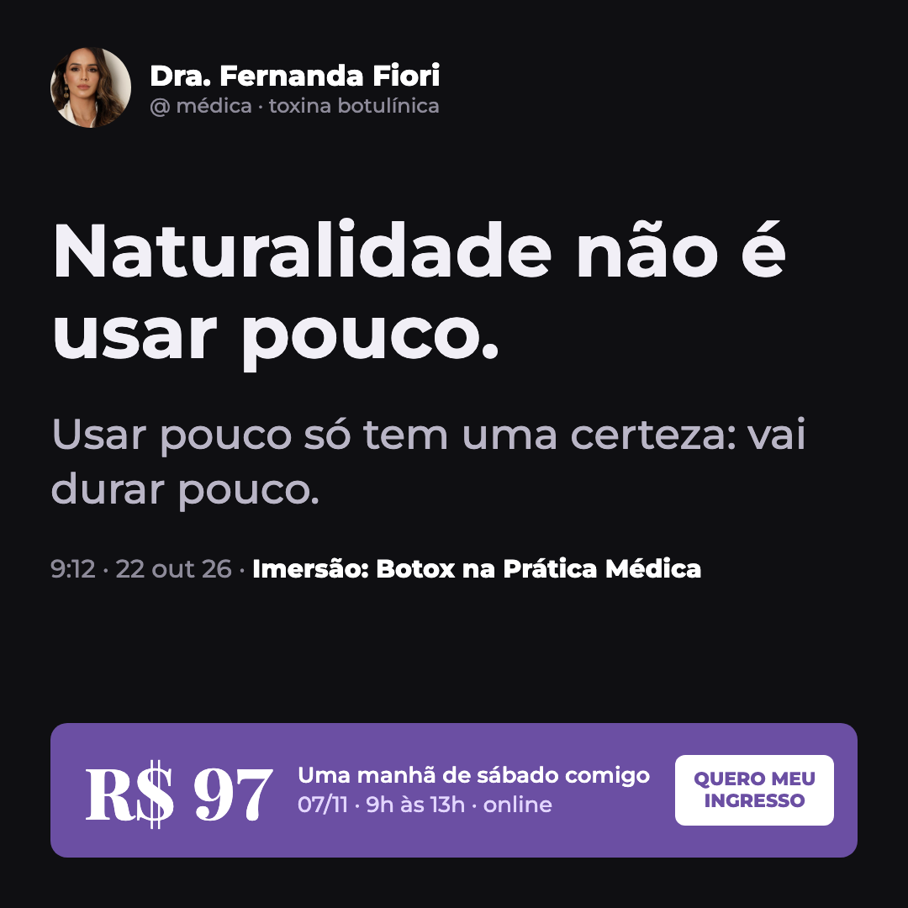

TESTAR PRIMEIRO192 · Foto grande + "o paciente já é seu" Esqueleto do 065 (foto dela aplicando, Colega médico, faixa de temas, de R$997 por R$97) com o ângulo que vendia por trás dele. "o paciente já tá lá, já é seu" [T:959]
 TESTAR PRIMEIRO194 · Hoje × depois do sábado Duas colunas com a mudança no médico, não na paciente. Lista curta e barra de preço do 175. erros e raciocínios da imersão [M:1–5]
 TESTAR PRIMEIRO193 · Caixinha de perguntas do Instagram Formato nativo de stories sobre retrato dela. Responde a mesma dúvida do 175 ("nunca aplicou toxina"). texto do 175 + "a maioria… estão começando" [T:225]
 195 · Citação gigante + retrato Autoridade: preto e dourado, frase-tese dela grande, assinatura de dermatologista. "Botox seguro não é ponto decorado" [M:1]
 196 · O que você vai ver na manhã Programa em linha do tempo ao lado da foto aplicando. Temas da faixa do 065 viram conteúdo. temas do 065: avaliação, diluição, dose, full face, casos reais
 197 · Post escuro, uma frase só O 175 no extremo oposto: quase sem texto, modo escuro. Testa se a frase sozinha segura. "Naturalidade não é usar pouco" [M:1]